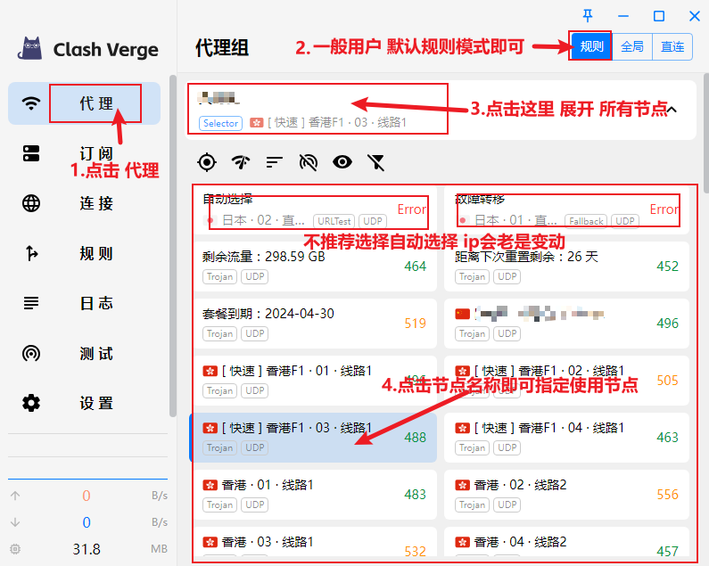
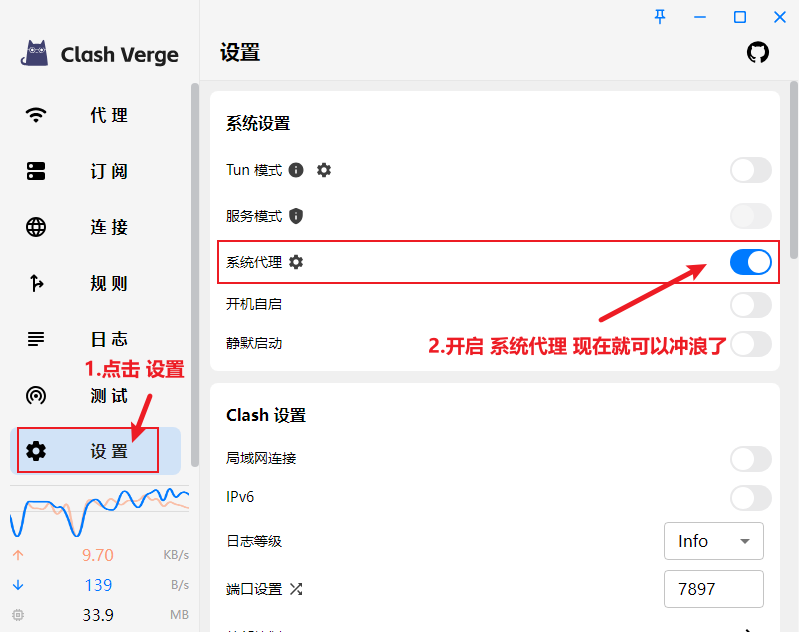

所有Clash软件都要添加Clash 节点（海外服务器）才能使用。如果您还没有Clash节点，可以点此免费试用往下拉就可以看到。
教程效果如上👆，详细步骤如下👇，不知道 Clash Verge 怎么用的朋友，五分钟包教包会✌️
安装选项全部按照默认即可。安装完成后点击猫咪图标启动。
可以找你喜欢的机场使用并注册
1.一般机场都有一键导入订阅地址的。也可以手动复制订阅粘贴到clash verge中
2. 使用真实的Gmail、微软、网易，QQ邮箱注册，可以收到注册验证码。
点击界面左侧菜单 【代理】，顶部代理模式无特殊需求通常选择默认【规则】，可在下方选择指定节点，如下图所示:
点击界面左侧菜单 【代理】，顶部代理模式无特殊需求通常选择默认【规则】，可在下方选择指定节点，如下图所示:
现在，Clash Verge 基本配置已经完成，可以正常使用了。